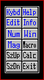

| My-T-Soft®: for Windows; Indestructible Keyboards and Indispensable Utilities; Version 1.80; User's Guide | ||
|---|---|---|
| Prev | Chapter 3. My-T-Soft Panels | Next |

The Control panel allows you to open and close all My-T-Soft panels. Click on each key to perform the toggle action. Blue (highlighted) letters indicate an open panel, black letters indicate a closed panel.
Click on the Tool Button to activate the Control Panel. To prevent the Operator from accessing this panel, see My-T-Soft Setup, Special Handling and the Advanced User Notes for Details.
Keys & Functions
Kybd: opens and closes the alpha keyboard panel
Edit: opens and closes the edit panel
Num: opens and closes the numeric panel
Mag: opens and closes the Magnifier panel
SzUp: steps up the size of My-T-Soft currently displayed If the Tool Bar is closed, this button will change to become Tool. If Tool is clicked on, the Tool Bar will open.
SzDn: steps down the size of My-T-Soft currently displayed If the Tool Bar is closed, this button will change to become Hide. If Hide is clicked on, the Control Panel will hide. If the Control Panel is the only button panel opened, this button will change to become Swap. If Swap is clicked on, the Tool Bar will open, and the Control panel will close.
Help: opens and closes the Quick Help panel
Info: opens and closes the System Information panel
Win: opens and closes the Windows Controls panel
Macro: opens and closes the Macro panel
Calc: opens and closes the Calculator
Exit: exits My-T-Soft and Closes the My-T-Soft Window